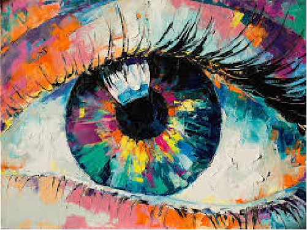

Son un conjunto de platillos y técnicas culinarias con una rica historia de fusión entre las culturas prehispánicas y la europea, reconocida como Patrimonio Cultural Inmaterial de la Humanidad por la UNESCO desde 2010. Se caracteriza por ingredientes como el maíz, chile, frijol, tomate, aguacate y cacao, y una gran diversidad regional. Algunos platillos representativos incluyen tacos, tamales, pozole, mole, chiles rellenos y guacamole.
En México contamos con una gran variedad de platillos desde la almeja chocolatada en Baja California Sur, hasta la sopa de Lima de Yucatán. Todos los ingredientes son deliciosos; pero de los más básicos y que distinguen a nuestro país, son el chile, el nopal, los frijoles y por supuesto no puede faltar el maíz, tanta es su diversidad y riqueza cultural
El arte es la actividad humana que se manifiesta a través de la creatividad y la expresión de emociones, ideas y percepciones. Se realiza mediante recursos plásticos, lingüísticos, sonoros u otros, con fines estéticos, simbólicos o intelectuales. El arte puede variar enormemente, desde disciplinas como la pintura y la escultura hasta la literatura, la música y el teatro, y a menudo refleja la cultura, la sociedad y las experiencias de quienes lo crean.
El arte es uno de los elementos más importantes de una cultura. A través de las diferentes disciplinas artísticas, mediante múltiples prácticas y técnicas lingüísticas, plásticas, sonoras o performáticas, se puede expresar lo que se es y lo que se siente. Desde hace años, la definición de arte es polémica y está sujeta a debates. No solo porque cada sociedad, cada época y cada mirada individual son diferentes, sino porque el arte se aborda desde muy diversas perspectivas (técnica, estética, sociológica, filosófica, espiritual, arqueológica, etnográfica, antropológica, materialista y otras) y cada una ofrece un punto de vista particular.
Antiguamente solo se consideraba arte a algunas disciplinas como la pintura, el dibujo, la música, la literatura y la danza. Hoy el concepto de arte abarca muchas más prácticas y manifestaciones, y puede incluir desde la manipulación de materia biológica (bioarte) hasta intervenciones en la vida política (arte político).
